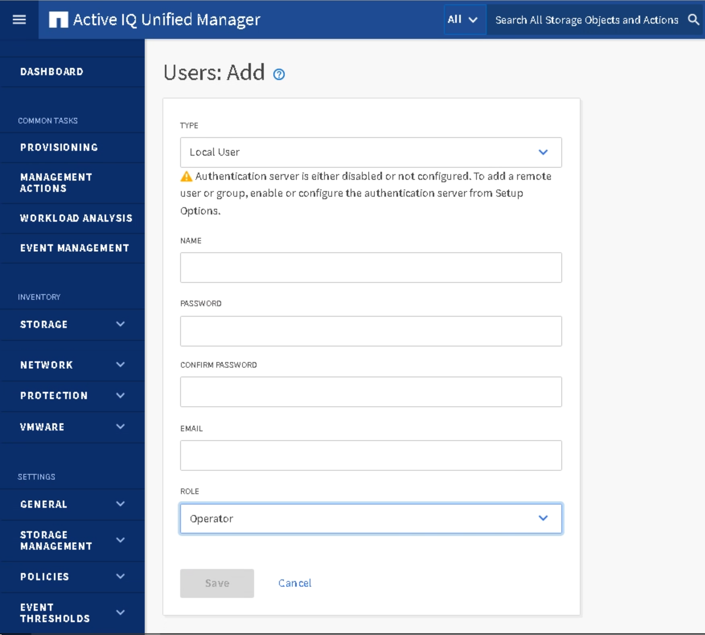

Solicitar cambios en el documento
Solicitar cambios en el documento Editar en GitHub
Editar en GitHub Guía del colaborador
Guía del colaboradorRequisitos previos de Active IQ Unified Manager
Colaboradores
Para la configuración y habilitación de Keystone Collector, Active IQ Unified Manager (Unified Manager) debe instalarse con configuraciones específicas.
Asegúrese de que se configure un servidor de Unified Manager donde esté instalado Unified Manager 9.7 o una versión posterior con la funcionalidad API Gateway habilitada.
Para obtener información sobre la instalación de Unified Manager, consulte estos enlaces:
Cree usuarios de Unified Manager
Debe crear los siguientes usuarios en Unified Manager para que Keystone Collector datos de uso y rendimiento:
-
Una cuenta de servicio para Keystone Collector con
Operatorrol de usuario. Este usuario es necesario para la recopilación de datos de uso. El servicio Keystone Collector se comunica con Unified Manager a través de API. Esta cuenta de servicio es necesaria para la comunicación. -
A.
Databasecuenta de usuario, con laReport Schemafunción. Este usuario es necesario para la recopilación de datos de rendimiento.
Para obtener información sobre la creación de usuarios, los tipos de usuario y los roles de usuario, consulte estos enlaces:
-
Inicie sesión en la interfaz de usuario web de Unified Manager con sus credenciales de usuario administrador de aplicaciones. Se crea un usuario administrador predeterminado durante la instalación. Consulte "Acceder a la interfaz de usuario web de Unified Manager".
-
Cree el usuario con
Operator role. Consulte "Adición de usuarios". -
Cree el
Databaseusuario. Consulte "Creación de un usuario de base de datos".

Habilite la puerta de enlace API en Unified Manager
Keystone Collector utiliza la puerta de enlace API de Unified Manager para comunicarse con clústeres de ONTAP.
Puede habilitar la puerta de enlace API desde la interfaz de usuario web o mediante la ejecución de algunos comandos a través de la CLI de Unified Manager.
Habilite la puerta de enlace API desde la interfaz de usuario web
Para habilitar la puerta de enlace de API desde la interfaz de usuario web de Unified Manager, siga estos pasos:
-
Inicie sesión en la interfaz de usuario web de Unified Manager con sus credenciales de usuario administrador de aplicaciones. Se crea un usuario administrador predeterminado durante la instalación. Consulte "Acceder a la interfaz de usuario web de Unified Manager".
-
Para obtener más información acerca de cómo habilitar la puerta de enlace API, consulte "Habilitar API Gateway".
Habilite la puerta de enlace de API mediante la CLI de Unified Manager
Estos pasos describen cómo se puede habilitar el acceso a la puerta de enlace API mediante la interfaz de línea de comandos de Unified Manager.
Para obtener más información acerca de los comandos admitidos, consulte "Comandos de CLI de Unified Manager compatibles".
-
En Unified Manager Server, inicie una sesión SSH e inicie sesión en la CLI de Unified Manager.
um cli login -u <umadmin> -
Compruebe si la puerta de enlace API ya está activada.
um option list api.gateway.enabled`Si el valor devuelto es `true, Indica que la funcionalidad API Gateway está activada. -
Si el valor devuelto es
false, Ejecute este comando para habilitar la funcionalidad API Gateway:
um option set api.gateway.enabled=true -
Reinicie el servidor de Unified Manager para aplicar el ajuste. Para más información:
-
En el sistema Linux, consulte "Reiniciar Unified Manager".
-
En el sistema VMware vSphere, consulte "Reiniciar la máquina virtual de Unified Manager".
-